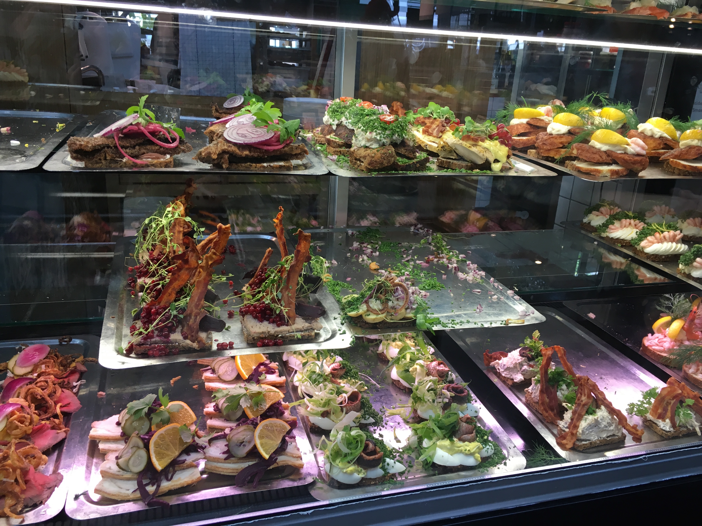
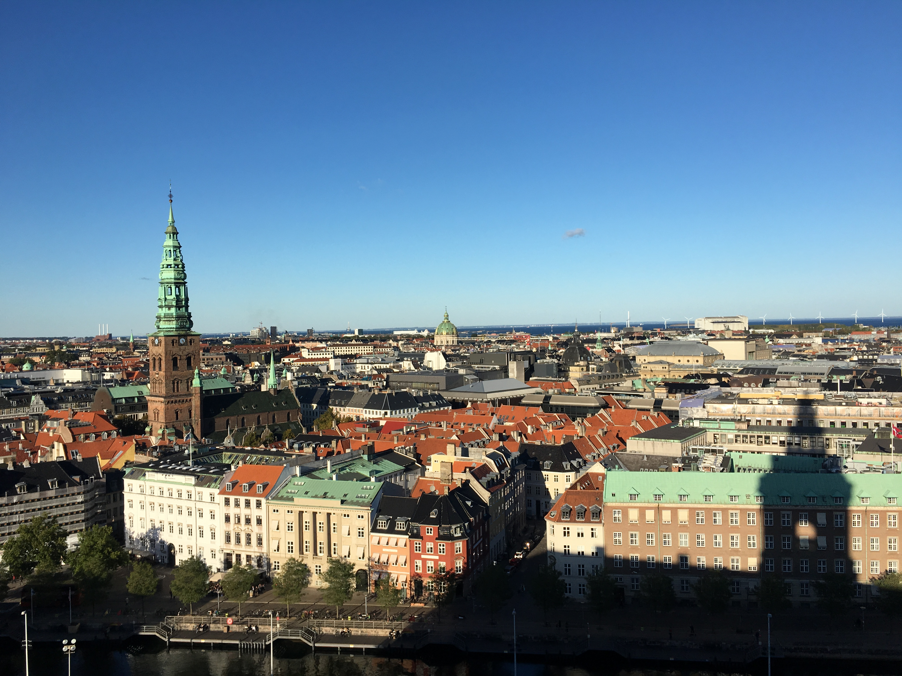
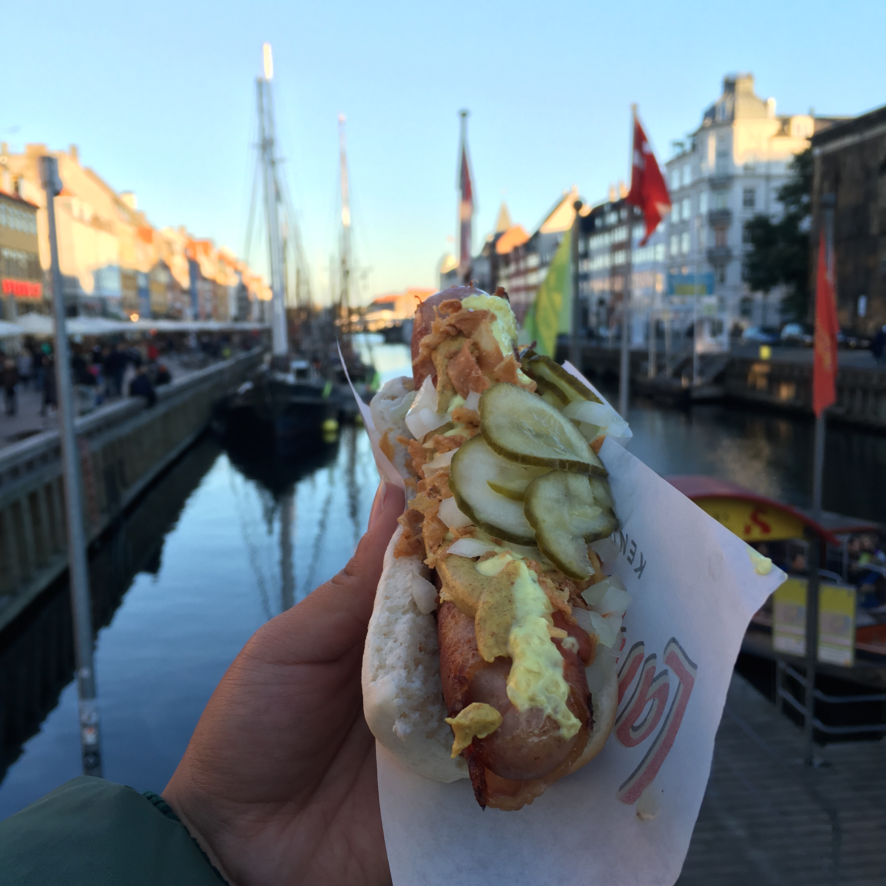
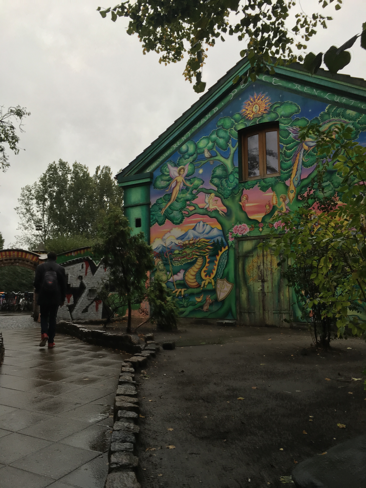

If you don't have much time in Copenhagen, don't sweat it! It's a very small and compact city you can totally walk through (or use their metro system) and get the most of! Here are some of the pretty standard things you can do along w/ a few other spots I quite enjoyed.

Smorgas (Open faced Sandwiches)
Smorgas are a must try in all of Denmark. Smorgas are served cold and are really pretty--worth putting on your Instagram pretty ;) These smorgas can be found in Torvehallerne

Christiansborg Palace--Free!
It's free to go to the top of Christiansborg Palace, the tallest tower in Copenhagen! It has a great all round view of Copenhagen, where most of the buildings are no more than 5 stories tall! You can see all of the landmarks and the palace itself has a long history of playing an important role in Copenhagen's history.

Nyhavn & Danish hot dogs
Nyhavn is probably Copenhagen's most photographed spot and has the right to be--it is quite lovely and colourful. But more importantly, please try a Danish hotdog (the one with the sausage wrapped in bacon) with the view--it's quite iconic.

Christiania
Christiania is in the Friedriksborg neighbourhood and is a freetown that doesn't follow Danish laws, as in, it is an independent commune. Christiania is probably most known for its huge advocacy on legalizing marijuana and you can actually purchase marijuana here. However, recently, there have been trouble with Christiania residents fighting off hard drugs from their town, so currently, it's a little more difficult to find drugs here. But still worth seeing, everything is built on its own and it's also slightly cheaper to buy certain things here because they do not follow Danish taxing system! Also--no photos allowed. This is a photo of outside Christiania!